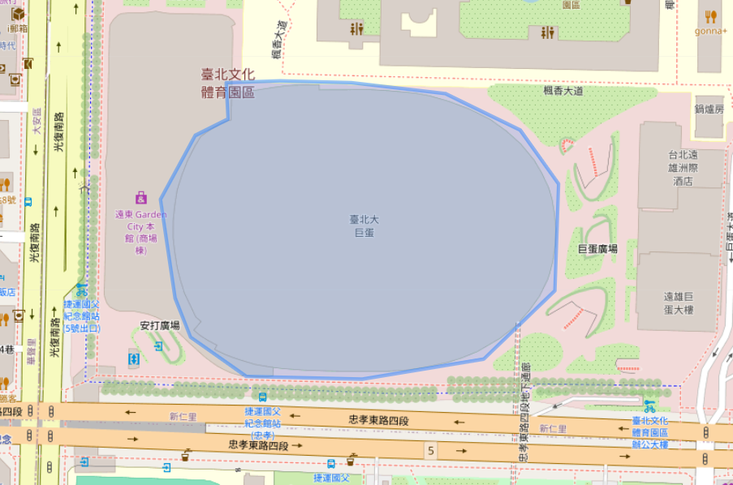
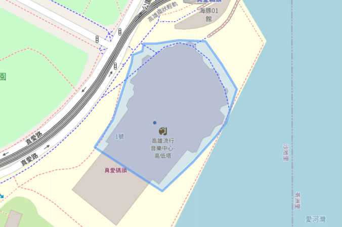
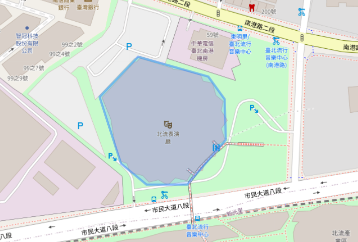

2026 TWM Data Games｜TAMI 應用組
初賽任務：誰來聽我的演唱會？
「以未來行為預測為核心，考驗透過電信數據識別分眾行為的細膩洞察。」
交件規範與格式說明 (Submission Rules)
排序規則：
請將預測信心度最高的 SubID 優先排在工作表上方。
※ 如提交數量超出限制，主辦單位將由上而下截取至上限名額為止。
SubID 前綴要求：
開頭請加上 G 或 P (G：月租型 / P：預付卡)。
※ 若未加上前綴將視為無效資料。
SubID 合併範例 (從 TAMI 下載後請務必合併)：
Col A
Col B
G
64408636
G
71772800
交件檔案 SubID 欄位
G64408636
G71772800
大型挑戰
臺北大巨蛋 Taipei Dome
鄧紫棋「I AM GLORIA」演唱會
2026/04/09 – 04/12
18:00 開演 (預計)
預測上限：20,000 人
GROUND TRUTH 判定邏輯
指定時段
開演後 3 小時內
停留門檻
90 分鐘以上
訊號類型
僅限室內基站
排除對象
住戶、上班族

分眾精準
高雄流行音樂中心 Kaohsiung Music Center
Apink「The Origin」亞洲巡迴
2026/04/11 (週六)
19:00 開演 (預計)
預測上限：3,000 人
GROUND TRUTH 判定邏輯
指定時段
開演後 3 小時內
停留門檻
90 分鐘以上
訊號類型
僅限室內基站
排除對象
住戶、上班族

經典洞察
台北流行音樂中心 Taipei Music Center
游鴻明「敵不過想念」演唱會
2026/04/11 (週六)
19:30 開演 (預計)
預測上限：3,000 人
GROUND TRUTH 判定邏輯
指定時段
開演後 3 小時內
停留門檻
90 分鐘以上
訊號類型
僅限室內基站
排除對象
住戶、上班族
